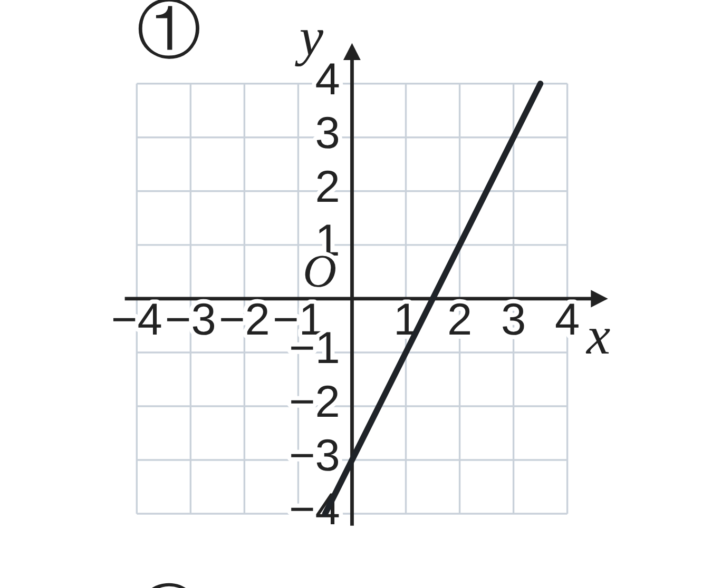
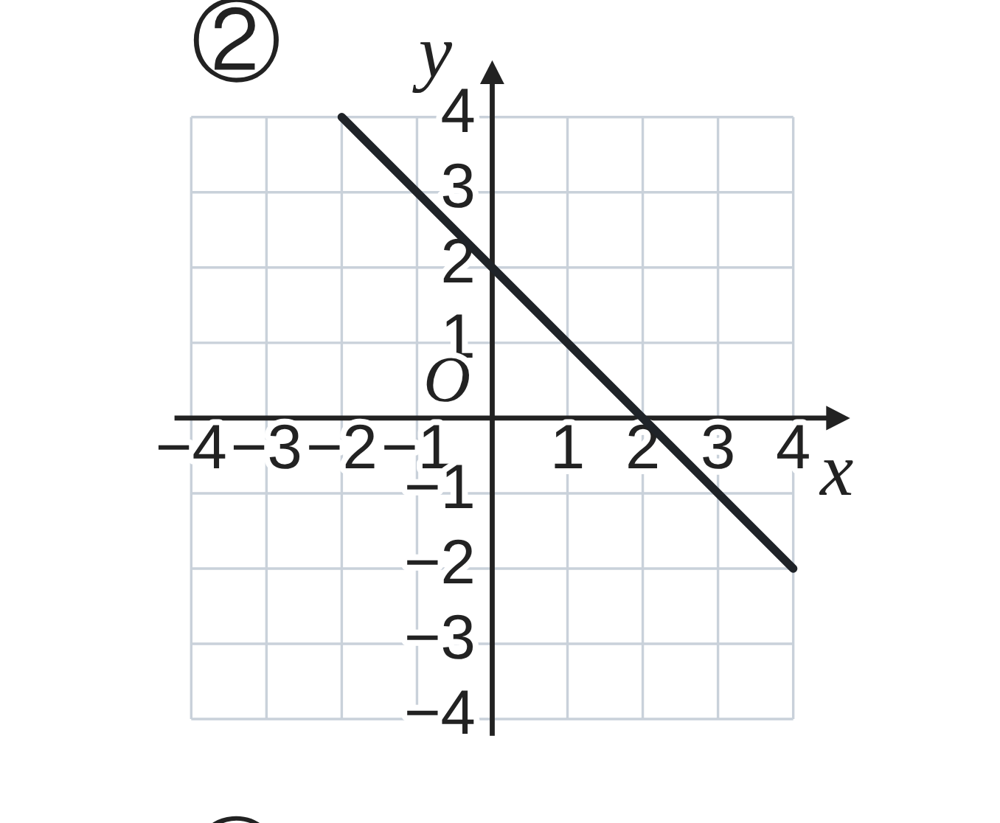
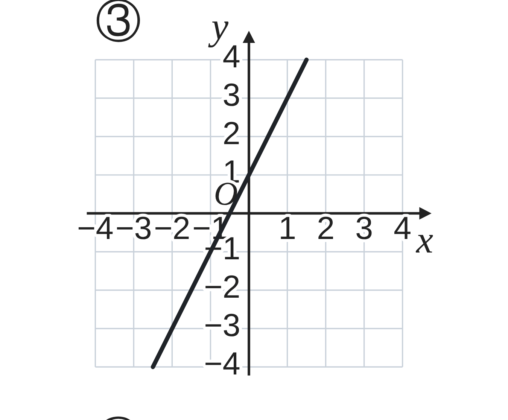
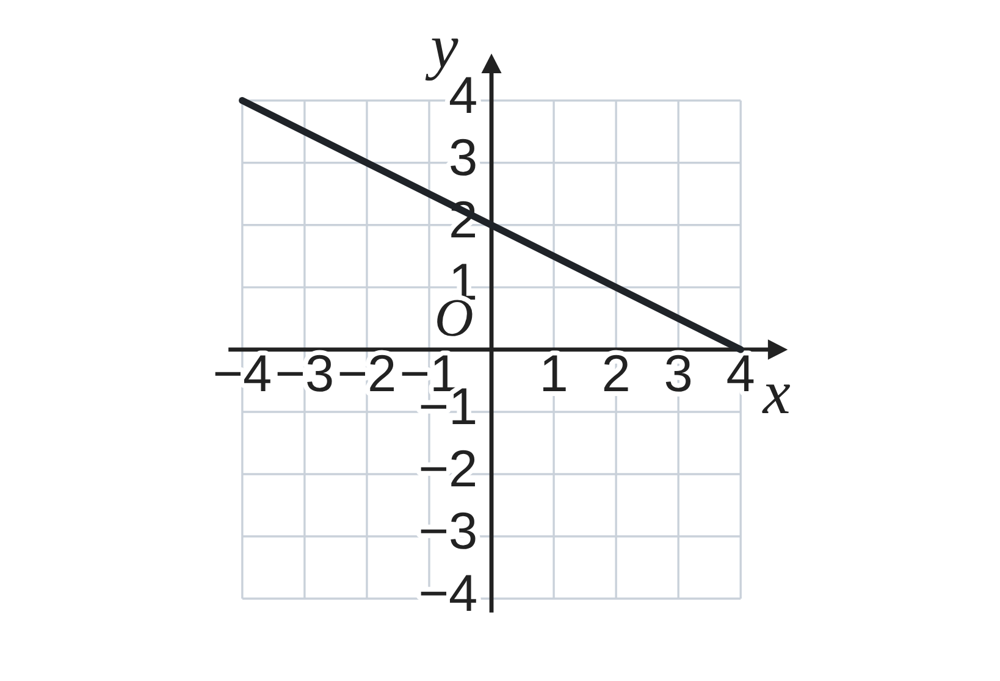
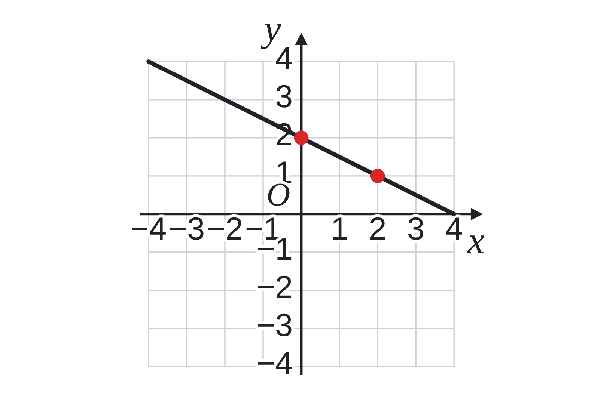

ペア学習
第7時 式とグラフのカードを合わせて、決め手を説明しよう
第6時の重要語句から、1人1問ずつ、言葉を選んで出題する。
聞かれた人は、その言葉の意味を、自分の言葉で言う。
切片
傾き
直線
一次関数 第7時 式とグラフのカードを合わせて、決め手を説明しよう
めあて
第7時 式とグラフのカードを合わせて、決め手を説明しよう
学習課題
式カード A〜F と、グラフ ①〜⑥ を、1つずつ合わせよう。
合わせたら、どこを見て決めたか（決め手）も、言えるようにしよう。
A
y＝2x+1
B
y＝−2x+1
C
y＝2x−3
D
y＝
1
2
x
E
y＝−x+2
F
y＝−
2
3
x−1
【合わせる】A〜F に合うグラフを書こう。決め手も、2つ書こう。
一次関数 第7時 式とグラフのカードを合わせて、決め手を説明しよう
学習課題のまとめ
第7時 式とグラフのカードを合わせて、決め手を説明しよう
グラフの、どこを見て決めた？ A と B、A と C は、どこがちがう？
答え合わせは、教卓の解答で。決め手を、言いながら確かめよう。



一次関数 第7時 式とグラフのカードを合わせて、決め手を説明しよう
ことば
第7時 式とグラフのカードを合わせて、決め手を説明しよう
y＝ax+b のグラフで、a を 、b を という。
傾きが同じ2つの直線は 。
切片 b … グラフと 軸の交点 (0, b) の y 座標。
b＝0 のとき、グラフは を通る。
傾き a … 右へ 1 進んだとき、上へ進む量（下へ進むときは負の数）。
a＞0 のとき 、a＜0 のとき のグラフ。
一次関数 第7時 式とグラフのカードを合わせて、決め手を説明しよう
ことば
第7時 式とグラフのカードを合わせて、決め手を説明しよう
y＝ax+b のグラフで、a を傾き、b を切片という。
傾きが同じ2つの直線は平行。
切片 b … グラフとy軸の交点 (0, b) の y 座標。
b＝0 のとき、グラフは原点を通る。
傾き a … 右へ 1 進んだとき、上へ進む量（下へ進むときは負の数）。
a＞0 のとき右上がり、a＜0 のとき右下がりのグラフ。
一次関数 第7時 式とグラフのカードを合わせて、決め手を説明しよう
例題
第7時 式とグラフのカードを合わせて、決め手を説明しよう
右の図の直線の式を求めよう。
この直線は、y 軸上の点 (0, ) を通り、
そこから右へ 進むと、
下へ 進む。

一次関数 第7時 式とグラフのカードを合わせて、決め手を説明しよう
例題 解答
第7時 式とグラフのカードを合わせて、決め手を説明しよう
この直線は、y 軸上の点 (0, 2) を通り、そこから右へ 2 進むと、下へ 1 進む。
切片は 2。右へ 2 進むと、下へ 1 進むから、
傾きは −
1
2
。
切片が 2、傾きが −
1
2
だから
y＝−
1
2
x+2
確かめ (2, 1) を代入すると −
1
2
×2+2＝1 ○

一次関数 第7時 式とグラフのカードを合わせて、決め手を説明しよう
考えよう
第7時 式とグラフのカードを合わせて、決め手を説明しよう
①
決めるのに迷った 2枚を書こう。
2枚は、どこが同じで、どこがちがうだろう。
②
グラフから式を言い当てる、自分の手順を、番号をつけて書こう。
③
【カードづくり】式を決めて、直線をかこう。
（傾きと切片は、整数か、きれいな分数）式は、友達にかくしておこう。
発展
（解き終わった人は）
切片が同じ直線をたくさんかくと、どんな図になるだろう。傾きが同じ直線を、たくさんかくと、どうだろう。
一次関数 第7時 式とグラフのカードを合わせて、決め手を説明しよう
振り返り
第7時 式とグラフのカードを合わせて、決め手を説明しよう
今日のめあて
傾き
切片
右上がり・右下がり
平行
原点を通る
今日わかったことを、ペアで1つずつ言い合おう。
ワークシートと演習プリントを出そう。（未完成でも出す）
一次関数 第7時 式とグラフのカードを合わせて、決め手を説明しよう